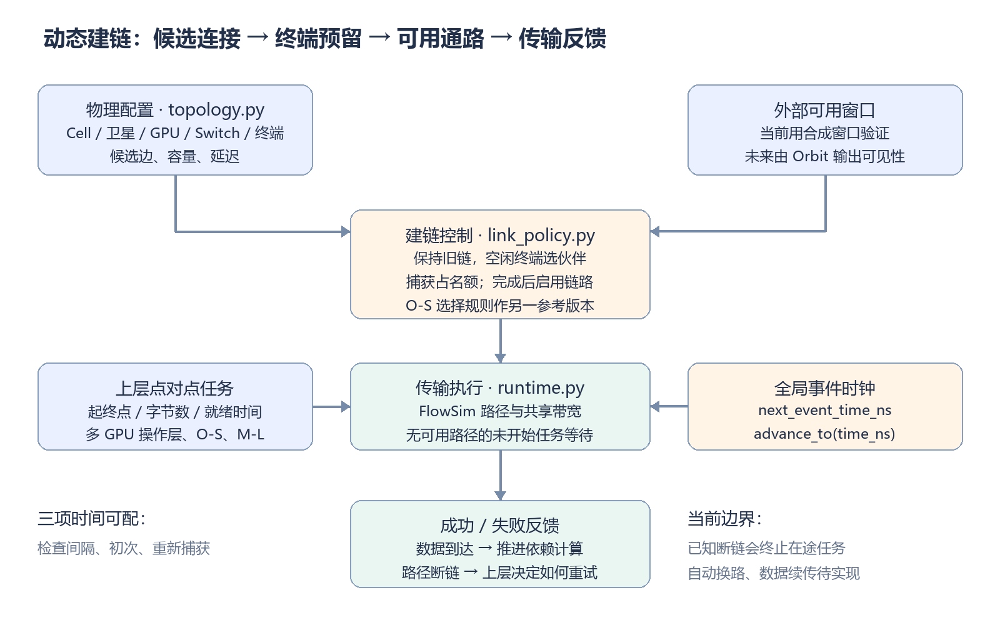

拓扑与通信：从职责到设备，再到共享
静态拓扑与动态建链已经实现。计算侧提交传输任务；网络在实际设备图上执行，返回成功／失败事件。三类输入使用同一个运行时。
① 外部只需要任务接口与终态事件
实线表示已实现模块之间的连接；虚线表示上层未来接入。通信模块不推断专家路由、不展开集合通信，也不管理 HBM 中 KV 的归属。
② 同一个 Cell：两颗星、独立设备、多终端
蓝色路径为 gpu0 → gpu2，橙色路径为 gpu1 → gpu3。两条路径使用不同星间链路，但共同经过 switchA。自由配置可以加入更多 Switch、纯通信星或跨 Cell 出口；这里只展示最小公开示例。
③ 不同终端也可能竞争同一份容量
基本示例结果：单笔执行约 1 ms；两笔并发各约 2 ms，再加各自路径 103 ns 的延迟。若移除 Switch 总容量，两笔走独立链路时不会相互限速。新任务加入和旧任务结束都触发带宽重新分配。
参考机制是 max-min 公平共享；这些参数是合成示例。已支持窗口断链失败；协议、换路和重传尚未模拟。
④ 保持旧链与捕获计时

simple_keep 保持仍可用的旧链，给空闲终端选伙伴；os_reference 复用 O-S 原连接选择。捕获占名额，尚不能传输。已知失效立即反馈失败，续传尚未实现。